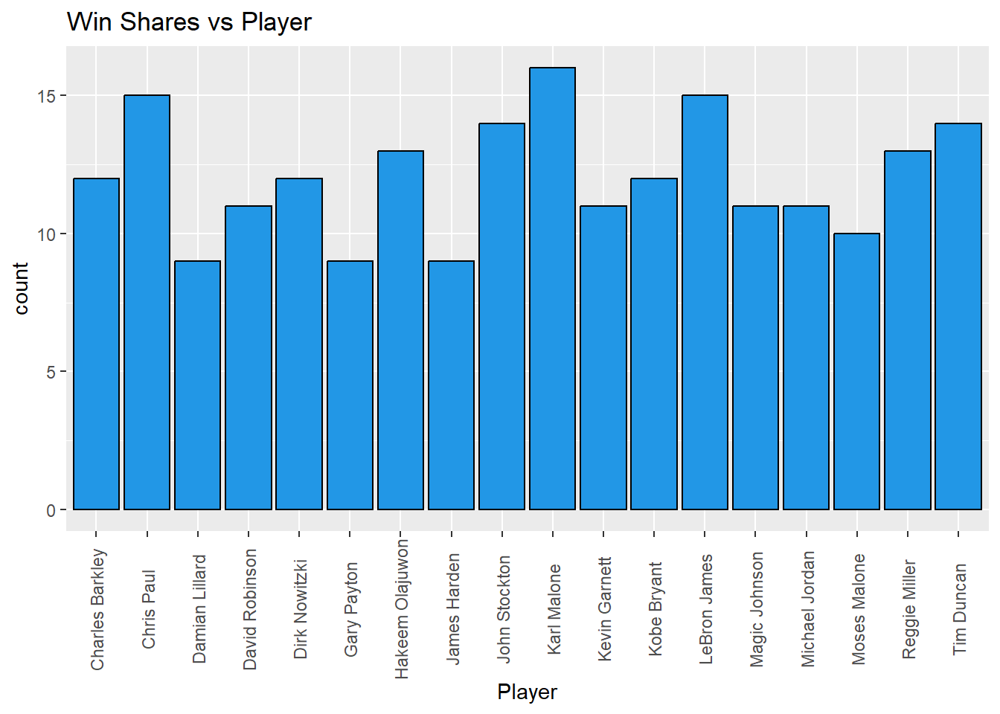
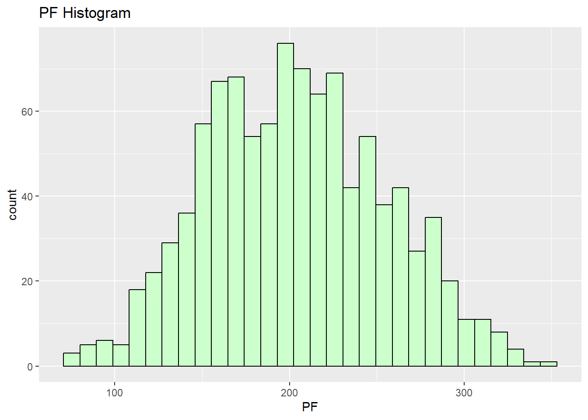

suppressMessages(library(dplyr))
library(dplyr)
NBA<-read.csv("nbastatz1.csv",header=TRUE)NBA[NBA==""]<-NA
NBA$Pos <- replace(NBA$Pos,NBA$Pos == "G-F","G")
NBA$Pos <- replace(NBA$Pos,NBA$Pos == "F-G","F")
NBA$Pos <- replace(NBA$Pos,NBA$Pos == "C-F","C")
NBA$Pos <- replace(NBA$Pos,NBA$Pos == "F-C","F")
NBA$Player[NBA$Player == "Jos\xe9 Calder\xf3n"]<- "Jose Calderon"
NBA$Player[NBA$Player == "Manu Gin\xf3bili"]<- "Manu Ginobili"
NBA$Player[NBA$Player == "Hedo T\xfcrko?lu"]<- "Hedo Turkoglu"
NBA$Player[NBA$Player == "Nen\xea"]<- "Nene"Now, we’ll check the for the correlation between the variables.
numNBA<- NBA[c('WS','Age','G','MP','FG','FGA','X2P','X2PA','X3P','X3PA','FT','FTA','ORB','DRB','TRB','AST','STL','BLK','TOV','PF','PTS','FG.','X2P.','X3P.','FT.','TS.','eFG.','Win.','Win','Loss','Champ.')]
library(reshape2)
correlation_matrix<-round(cor(numNBA),2)
melt_corr_mat<-melt(correlation_matrix)
library(ggplot2)
ggplot(data = melt_corr_mat, aes(x=Var1, y=Var2, fill= value)) + geom_tile(width= 1, colour = "white") +
scale_fill_gradient(low = "white", high = "steelblue")+geom_text(aes(Var2, Var1, label = value),
color = "black", size = 2) + theme(axis.text.x = element_text(angle = 90, vjust = 0.5)) + ggtitle("Numeric Variable Heat Map")It’s time for some Exploratory Data Analysis!
ggplot(NBA, aes(x = WS)) + geom_histogram(color="black",fill="purple")+ geom_vline(aes(xintercept = min(WS)), color = "red") +
geom_vline(aes(xintercept = max(WS)), color = "green")+ geom_vline(aes(xintercept = mean(WS)), color = "yellow") + geom_vline(aes(xintercept = median(WS)), color = "blue")+
ggtitle("Win Shares Histogram")`stat_bin()` using `bins = 30`. Pick better value with `binwidth`.ggplot(NBA, aes(x = Pos, y = WS)) + geom_boxplot(fill="purple")+ ggtitle("Win Shares vs Position")ggplot(NBA, aes(x = Team, y = WS)) + geom_boxplot(fill="red")+ theme(axis.text.x = element_text(angle = 90, vjust = 0.5))team_counts <- NBA %>%
group_by(Team) %>%
summarise(count = n()) %>%
arrange(desc(count))
ggplot(team_counts, aes(x = reorder(Team, -count), y = count)) + geom_bar(stat = "identity", fill = "blue", color = "black") + theme(axis.text.x = element_text(angle = 90, vjust = 0.5)) + ggtitle("Count of Top 1000 per Team")team_mean_win_shares <- NBA %>%
group_by(Team) %>%
summarise(mean_win_shares = mean(WS)) %>%
arrange(desc(mean_win_shares))
ggplot(team_mean_win_shares, aes(x = reorder(Team, -mean_win_shares), y = mean_win_shares)) +
geom_bar(stat = "identity", fill = "#66FF99", color = "black") +
theme(axis.text.x = element_text(angle = 90, vjust = 0.5)) +
ggtitle("Mean of Win Shares per Team")ggplot(NBA, aes(x = Team, y = WS)) +
stat_summary(fun = mean, geom = "bar", fill = "#66FF99", color="black") +
theme(axis.text.x = element_text(angle = 90, vjust = 0.5)) +
ggtitle("Mean of WS per Team") ggplot(NBA, aes(x = Season)) +
geom_bar(color= "black" ,fill="purple") + theme(axis.text.x = element_text(angle = 90, vjust = 0.5))+ ggtitle("Win Shares vs Season")bestNBA <- NBA[NBA$Player %in% c("Karl Malone", "Chris Paul", "LeBron James", "John Stockton", "Tim Duncan", "Hakeem Olajuwon", "Reggie Miller", "Charles Barkley", "Dirk Nowitzki", "Kobe Bryant", "David Robinson", "Kevin Garnett", "Magic Johnson", "Michael Jordan", "Moses Malone", "Damian Lillard", "Gary Payton", "James Harden"), ]
player_counts <- bestNBA %>%
group_by(Player) %>%
summarise(count = n()) %>%
arrange(desc(count))
ggplot(player_counts, aes(x = reorder(Player, -count), y = count)) +
geom_bar(stat = "identity", color = "black", fill = "556B2F") +
theme(axis.text.x = element_text(angle = 90, vjust = 0.5)) +
ggtitle("Number of Appearances vs Player")
ggplot(bestNBA, aes(x = Player)) +
geom_bar(color= "black" ,fill="556B2F") +
theme(axis.text.x = element_text(angle = 90, vjust = 0.5)) +
ggtitle("Win Shares vs Player")
player_mean_win_shares <- bestNBA %>%
group_by(Player) %>%
summarise(mean_win_shares = mean(WS)) %>%
arrange(desc(mean_win_shares))
bestNBA <- merge(bestNBA, player_mean_win_shares, by = "Player")
ggplot(bestNBA, aes(x = reorder(Player, -mean_win_shares), y = WS)) +
geom_boxplot(fill = "red") +
theme(axis.text.x = element_text(angle = 90, vjust = 0.5)) +
ggtitle("Win Shares vs Player")ggplot(bestNBA, aes(x = Player, y = WS)) +
geom_boxplot(fill="red")+ theme(axis.text.x = element_text(angle = 90, vjust = 0.5)) + ggtitle("Win Shares vs Player")ggplot(NBA, aes(x = Win.)) + geom_histogram(color="black",fill="#99CC33")+ geom_vline(aes(xintercept = min(Win.)), color = "red") +
geom_vline(aes(xintercept = max(Win.)), color = "green")+ geom_vline(aes(xintercept = mean(Win.)), color = "yellow") + geom_vline(aes(xintercept = median(Win.)), color = "blue")+
ggtitle("Win% Histogram")`stat_bin()` using `bins = 30`. Pick better value with `binwidth`.team_mean_win_percent <- NBA %>%
group_by(Team) %>%
summarise(mean_win_percent = mean(Win.)) %>%
arrange(desc(mean_win_percent))
ggplot(team_mean_win_percent, aes(x = reorder(Team, -mean_win_percent), y = mean_win_percent)) +
geom_bar(stat = "identity", fill = "#cc6600", color = "black") +
theme(axis.text.x = element_text(angle = 90, vjust = 0.5)) +
ggtitle("Mean of Win% per Team")ggplot(NBA, aes(x = Team, y = Win.)) +
stat_summary(fun = mean, geom = "bar", fill = "#cc6600", color="black") +
theme(axis.text.x = element_text(angle = 90, vjust = 0.5)) +
ggtitle("Mean of Win% per Team") player_mean_win_percent <- bestNBA %>%
group_by(Player) %>%
summarise(mean_win_percent = mean(Win.)) %>%
arrange(desc(mean_win_percent))
ggplot(player_mean_win_percent, aes(x = reorder(Player, -mean_win_percent), y = mean_win_percent)) +
geom_bar(stat = "identity", fill = "#cc6600", color = "black") +
theme(axis.text.x = element_text(angle = 90, vjust = 0.5)) +
ggtitle("Mean of Win% per Player")ggplot(bestNBA, aes(x = Player, y = Win.)) +
stat_summary(fun = mean, geom = "bar", fill = "#cc6600", color="black") +
theme(axis.text.x = element_text(angle = 90, vjust = 0.5)) +
ggtitle("Mean of Win% per Player") ggplot(NBA, aes(x = MP)) + geom_histogram(color="black",fill="#CCFFCC")+ geom_vline(aes(xintercept = min(MP)), color = "red") +
geom_vline(aes(xintercept = max(MP)), color = "green")+ geom_vline(aes(xintercept = mean(MP)), color = "yellow") + geom_vline(aes(xintercept = median(MP)), color = "blue")+
ggtitle("MP Histogram")`stat_bin()` using `bins = 30`. Pick better value with `binwidth`.ggplot(NBA, aes(x = FG)) + geom_histogram(color="black",fill="#CCFFCC")+ geom_vline(aes(xintercept = min(FG)), color = "red") +
geom_vline(aes(xintercept = max(FG)), color = "green")+ geom_vline(aes(xintercept = mean(FG)), color = "yellow") + geom_vline(aes(xintercept = median(FG)), color = "blue")+
ggtitle("FGA Histogram")`stat_bin()` using `bins = 30`. Pick better value with `binwidth`.ggplot(NBA, aes(x = FGA)) + geom_histogram(color="black",fill="#CCFFCC")+ggtitle("FGA Histogram")`stat_bin()` using `bins = 30`. Pick better value with `binwidth`.ggplot(NBA, aes(x = X2P)) + geom_histogram(color="black",fill="#CCFFCC")+ggtitle("2P Histogram")`stat_bin()` using `bins = 30`. Pick better value with `binwidth`.ggplot(NBA, aes(x = X2PA)) + geom_histogram(color="black",fill="#CCFFCC")+ggtitle("2PA Histogram")`stat_bin()` using `bins = 30`. Pick better value with `binwidth`.ggplot(NBA, aes(x = X3P)) + geom_histogram(color="black",fill="#CCFFCC")+ggtitle("3P Histogram")`stat_bin()` using `bins = 30`. Pick better value with `binwidth`.ggplot(NBA, aes(x = X3PA)) + geom_histogram(color="black",fill="#CCFFCC")+ggtitle("3PA Histogram")`stat_bin()` using `bins = 30`. Pick better value with `binwidth`.ggplot(NBA, aes(x = FT)) + geom_histogram(color="black",fill="#CCFFCC")+ggtitle("FT Histogram")`stat_bin()` using `bins = 30`. Pick better value with `binwidth`.ggplot(NBA, aes(x = FTA)) + geom_histogram(color="black",fill="#CCFFCC")+ggtitle("FTA Histogram")`stat_bin()` using `bins = 30`. Pick better value with `binwidth`.ggplot(NBA, aes(x = ORB)) + geom_histogram(color="black",fill="#CCFFCC")+ggtitle("ORB Histogram")`stat_bin()` using `bins = 30`. Pick better value with `binwidth`.ggplot(NBA, aes(x = DRB)) + geom_histogram(color="black",fill="#CCFFCC")+ggtitle("DRB Histogram")`stat_bin()` using `bins = 30`. Pick better value with `binwidth`.ggplot(NBA, aes(x = TRB)) + geom_histogram(color="black",fill="#CCFFCC")+ggtitle("TRB Histogram")`stat_bin()` using `bins = 30`. Pick better value with `binwidth`.ggplot(NBA, aes(x = AST)) + geom_histogram(color="black",fill="#CCFFCC")+ggtitle("AST Histogram")`stat_bin()` using `bins = 30`. Pick better value with `binwidth`.ggplot(NBA, aes(x = STL)) + geom_histogram(color="black",fill="#CCFFCC")+ggtitle("STL Histogram")`stat_bin()` using `bins = 30`. Pick better value with `binwidth`.ggplot(NBA, aes(x = BLK)) + geom_histogram(color="black",fill="#CCFFCC")+ggtitle("BLK Histogram")`stat_bin()` using `bins = 30`. Pick better value with `binwidth`.ggplot(NBA, aes(x = TOV)) + geom_histogram(color="black",fill="#CCFFCC")+ggtitle("TOV Histogram")`stat_bin()` using `bins = 30`. Pick better value with `binwidth`.ggplot(NBA, aes(x = PF)) + geom_histogram(color="black",fill="#CCFFCC")+ggtitle("PF Histogram")`stat_bin()` using `bins = 30`. Pick better value with `binwidth`.
ggplot(NBA, aes(x = PTS)) + geom_histogram(color="black",fill="#CCFFCC")+ggtitle("PTS Histogram")`stat_bin()` using `bins = 30`. Pick better value with `binwidth`.ggplot(NBA, aes(x = FG.)) + geom_histogram(color="black",fill="#CCFFCC")+ggtitle("FG. Histogram")`stat_bin()` using `bins = 30`. Pick better value with `binwidth`.ggplot(NBA, aes(x = X2P.)) + geom_histogram(color="black",fill="#CCFFCC")+ggtitle("X2P. Histogram")`stat_bin()` using `bins = 30`. Pick better value with `binwidth`.ggplot(NBA, aes(x = X3P.)) + geom_histogram(color="black",fill="#CCFFCC")+ggtitle("X3P. Histogram")`stat_bin()` using `bins = 30`. Pick better value with `binwidth`.Warning: Removed 45 rows containing non-finite values (`stat_bin()`).ggplot(NBA, aes(x = FT.)) + geom_histogram(color="black",fill="#CCFFCC")+ggtitle("FT. Histogram")`stat_bin()` using `bins = 30`. Pick better value with `binwidth`.ggplot(NBA, aes(x = TS.)) + geom_histogram(color="black",fill="#CCFFCC")+ggtitle("TS. Histogram")`stat_bin()` using `bins = 30`. Pick better value with `binwidth`.ggplot(NBA, aes(x = eFG.)) + geom_histogram(color="black",fill="#CCFFCC")+ggtitle("eFG. Histogram")`stat_bin()` using `bins = 30`. Pick better value with `binwidth`.ggplot(NBA, aes(x = Win)) + geom_histogram(color="black",fill="#CCFFCC")+ggtitle("Win Histogram")`stat_bin()` using `bins = 30`. Pick better value with `binwidth`.ggplot(NBA, aes(x = Loss)) + geom_histogram(color="black",fill="#CCFFCC")+ggtitle("Loss Histogram")`stat_bin()` using `bins = 30`. Pick better value with `binwidth`.ggplot(NBA, aes(x = Win.)) + geom_histogram(color="black",fill="#CCFFCC")+ggtitle("Win. Histogram")`stat_bin()` using `bins = 30`. Pick better value with `binwidth`.ggplot(NBA, aes(x = Champ., y = WS)) +
geom_boxplot(fill="red")+ theme(axis.text.x = element_text(angle = 90, vjust = 0.5)) + ggtitle("Win Shares vs Champ.") + facet_wrap(~ Champ.)sum(NBA$Champ.=="1")[1] 89sum(NBA$Champ.=="0")[1] 911mean(NBA$WS)[1] 11.0337median(NBA$WS)[1] 10.3sum(NBA$Pos== "G")[1] 281sum(NBA$Pos== "F")[1] 178sum(NBA$Pos== "C")[1] 133